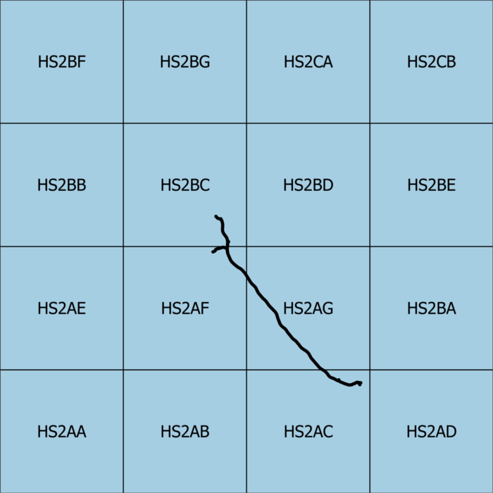

HS2 SnakeGrid Reference System
The SnakeGrid coordinate system is a map projection which features a one:one relationship with distances on the ground (no distortion) for the length of a linear project. It is required use for the HS2 infrastructure project. This tool converts Eastings and Northings in the HS2 SnakeGrid CRS to/from grid reference squares [Chrome recommended].
